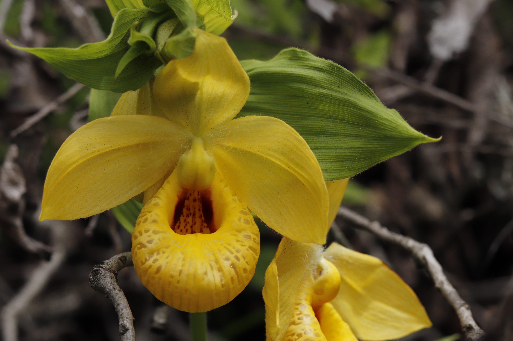
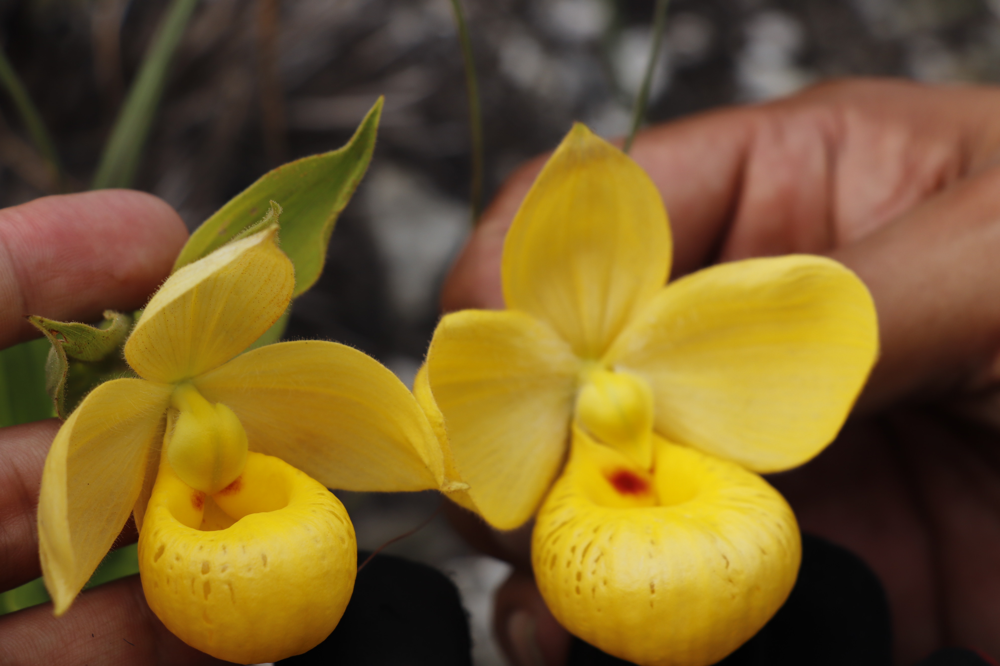
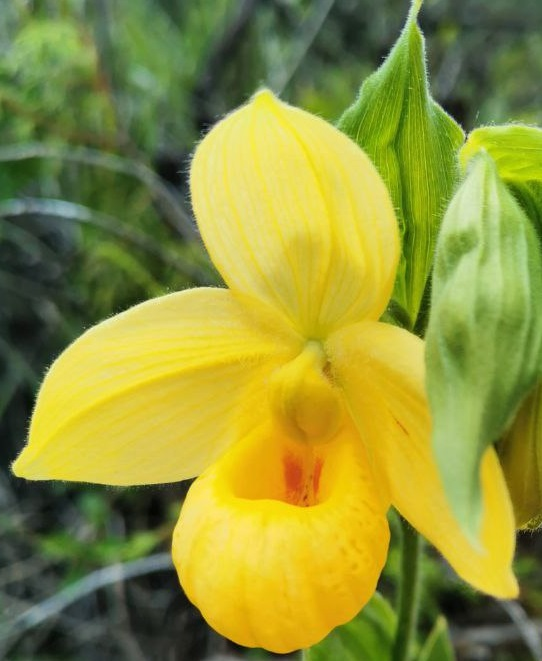

In the summer of 2023, a casual browse through the online forum of the Asociación Mexicana de Orquideología led Orchidarc to one of its most significant discoveries: a vast population of golden-flowered Cypripedium spread across the slopes of a mountain in Veracruz.
The first clue was a photograph shared online by the naturalist Gabriel. The plant was unmistakably a Cypripedium, but the apparent abundance and variation were unexpected. Subsequent field surveys suggested a population approaching 5,000 individuals — far larger than many previously documented colonies, which may contain only a few dozen plants.
The site was not only remarkable for its scale. Within a single mountain, plants occurred as tall single-stemmed forest forms, clumping grassland forms, and compact summit forms rooted in shallow volcanic and red soils. The discovery reframed the Veracruz population not merely as a large colony, but as a dynamic system of habitat-linked variation.
Mexican Cypripedium and their habitats
The Mexican representatives of the genus belong to section Irapeana, an ancient lineage within Cypripedium. These are the golden slippers of Mesoamerica: yellow to golden-orange terrestrial orchids of oak and pine forests, scrublands, grasslands and rocky openings.
The three main species
- Cypripedium irapeanum La Llave & Lex. — the largest and most widely distributed species, ranging from northwestern Mexico through Guatemala and Honduras. It can produce stems over one metre tall and flowers 10–15 cm across.
- Cypripedium molle Lindl. — a smaller species, mainly associated with Oaxaca and parts of Puebla, with smaller flowers and red markings on the lateral lobes.
- Cypripedium dickinsonianum Hágsater — the rarest and smallest of the trio, originally described from Chiapas and reported as a compact, potentially autogamous species.
All are terrestrial orchids with perennial rhizomes. They produce leafy shoots during the rainy season and retreat underground during the dry months. Their dependence on symbiotic fungi is profound, and this fungal reliance helps explain why cultivation away from habitat has historically been difficult.

The taxonomic debate
Few Mexican orchids have generated as much taxonomic debate as the golden Cypripedium. Since C. irapeanum was described in 1825 from Irapeo, Michoacán, additional names have been proposed to account for the variation found across Mexico's complex landscapes. Some names likely reflect genuine biological differentiation, while others are better understood as local expressions within a broad and flexible species complex.
Names such as C. lexarzae, C. splendidum and C. turgidum have generally been treated as synonyms or variants of C. irapeanum. C. molle, however, is widely treated as distinct, and C. dickinsonianum remains a rare and distinctive miniature species.
The Veracruz population demonstrates why the taxonomy is difficult. Plants only a short distance apart can differ strongly in size, flower morphology and growth form. In isolation, some might appear to represent different taxa; in the field, they form a continuous ecological spectrum across forest, savannah, grassland and summit habitats.
Conservation implication. Whether interpreted as species, ecotypes or synonyms, the golden slippers represent a Mesoamerican evolutionary lineage of exceptional conservation value. Protecting them means preserving the full ecological and morphological spectrum, not only the most typical form.
Savannah, grassland and summit forms
At the Veracruz site, the diversity of habitats is visible within a single mountain. The orchids occupy oak savannah, open grassland, rocky summit vegetation and transitional slopes. Their forms appear linked to microhabitat differences in light, soil depth, exposure, fire history and competition.
Oaks as terrestrial guardians
Beneath mature oaks, the orchids can reach nearly a metre in height, often as single, sturdy stems with large golden flowers. These savannah or woodland individuals seem adapted to lower light and partial shade, investing in height and flower size. Other terrestrial orchids, including Spiranthes and Goodyera, occur in the same oak-root environments.
The grassland clumps
In open meadows, the plants are often shorter but more numerous, forming clumps with multiple flowering stems. Rather than investing in a single large shoot, these grassland plants appear to favour multiplicity. During peak flowering, the grasslands can become scattered with golden patches of slipper orchids hidden among grasses.
The summit dwarfs
At the windswept summit, where soils are shallow, rocky and exposed, the plants become compact. These summit forms may be only 30 cm tall, with much smaller flowers. They occur with terrestrial orchids such as Bletia adenocarpa and Bletia campanulata. Similar yellow-and-red floral palettes in co-flowering orchids raise questions about pollinator overlap and convergence.




Fire, disturbance and resilience
The discovery was quickly shadowed by environmental damage. In spring 2024, severe wildfires swept across central Veracruz, including slopes supporting the Cypripedium population. For a plant tied to underground rhizomes and fungal partners, fire is both an immediate threat and a long-term ecological disturbance.
The fire damage was uneven. Aboveground shoots were lost, but rhizomes survived in many places. By the following rainy season, photographs from the site showed strong regrowth in grassland areas, with dense clumps emerging from burned ground. This suggests ecological resilience, but it should not be mistaken for invulnerability.
Repeated or more intense fire can transform forest structure, remove epiphyte communities, reduce canopy humidity, alter soil conditions and disrupt pollinator networks. The same disturbance that temporarily opens habitat may eventually erase the ecological balance that sustains the orchids.
Conservation
The Veracruz population is a test of how quickly science, conservation and community action can work together. The plants are resilient, but their survival depends on soils, fungi, seasonal rhythms, land tenure and local stewardship.
Ex situ hope: from seed to seedling
During the first season of exploration, Orchidarc collected a limited number of seed pods for conservation research. These were entrusted to Dr. David Gregory at the University of Sheffield, who has achieved consistent germination and early growth of Cypripedium irapeanum under laboratory conditions.
Two experimental factors appear especially important: adjusting the pH of the culture medium to reflect wild soil chemistry, and simulating the seasonal thermal cycle of the species — cold winters, hot dry springs, cool wet summers and temperate autumns. Ex situ seedlings do not replace habitat protection, but they provide insurance and a platform for understanding the species' requirements.
Community land, shared responsibility
The Veracruz site lies within a landscape shaped by communal landholding, agriculture, fire and grazing. Conservation therefore cannot be imposed from outside. It must work with local communities and create incentives for protection. Orchidarc is developing a conservation strategy combining land protection, guided ecotourism, local participation and long-term monitoring.
The time is now
The largest known Cypripedium population in Mesoamerica stands at a crossroads. Fires, habitat change and mismanagement could damage it within years. With timely action, it can instead become a model of community-led, science-driven orchid conservation.
These orchids have survived for millions of years, adapting to fire, climate and landscape change. Whether they survive the next few decades depends on the choices made now.
Support the Cypripedium campaign
References
- Cribb, P. J. and M. A. Soto-Arenas. 1993. The genus Cypripedium in Mexico and Central America. Orquídea (Méx.) 13(1–3): 205–214.
- Hernández-Apolinar, M., C. C. Gutiérrez-Paredes, I. Sánchez-Gallen, E. Aguirre, and E. A. Pérez-García. 2012. Ecological aspects of Cypripedium irapeanum La Llave & Lex., an endangered Mexican orchid species. Slipper Orchid Alliance Newsletter 13(4): 1–6.
- Lagou, L. J., G. Kadereit, and D. F. Morales-Briones. 2024. Phylogenomic analysis of target enrichment and transcriptome data uncovers rapid radiation and extensive hybridization in the slipper orchid genus Cypripedium. Annals of Botany 134: 1229–1250.
- Li, J.-h., Z.-j. Liu, G. A. Salazar, P. Bernhardt, H. Perner, T. Yukawa, X.-h. Jin, S.-w. Chung, and Y.-b. Luo. 2011. Molecular phylogeny of Cypripedium inferred from multiple nuclear and chloroplast regions. Molecular Phylogenetics and Evolution 61: 308–320.
- Moreno-Camarena, M. and M. P. Ortega-Larrocea. 2022. Mesoamerican Cypripedium: Mycorrhizal contributions to promote their conservation as critically endangered species. Plants 11: 1554.
- Pérez-García, E. A. and E. A. Mó. 2012. Las Cypripedioideae de Mesoamérica, Parte I: Los géneros Cypripedium y Selenipedium. Boletín de la Asociación Mexicana de Orquideología Nov–Dec: 4–15.
- Rankou, H. and G. A. Salazar Chávez. 2014. Cypripedium irapeanum. The IUCN Red List of Threatened Species 2014: e.T43316630A43327669.
- Salazar, G. A. and H. Rankou. 2014. Conservation status of Cypripedium irapeanum. IUCN Red List assessment, Gland, Switzerland.
- Szlachetko, D. L., M. Kolanowska, R. Medina Trejo, R. González-Tamayo, and T. Veyret. 2021. The natural history of the genus Cypripedium. Acta Societatis Botanicorum Poloniae 90(1): 9029.
- Vargas-Rueda, A. F., J. E. Rivera-Hernández, M. de J. Cházaro-Basáñez, and G. Alcántara-Salinas. 2019. New records for the flora of Veracruz in the Cañón del Río Blanco National Park, Mexico. Acta Botanica Mexicana 126: e1429.
- Vannini, J. 2002. Cypripedium dickinsonianum / C. irapeanum in nature. Cypripedium.de Forum, June 27.